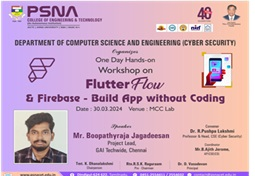
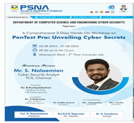
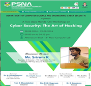

.jpeg)
Inauguration
Club Inauguration
Department of CSE (CYBER SECURITY) inaugurated a club titled “CYBER SENTINEL CLUB” on December 01, 2023 at CM Auditorium. The students of CSE(CS), ECE, CSE, IT, BME, and EEE attended the event.
Mr. Sankarraj Subramanian, CEO of Prompt Infotech, Coimbatore. Dr.A.Sasirekha, introduced the members of club. He demonstrates various real time attacks and ethical hacking techniques
Events
Flutter Flow -Workshop:
Building Your Career As a CyberSecurity Professional-Webinar:

PENTEST PRO: UNVEILING CYBER SECRETS- workshop:
Cyber Security- The Art of Hacking- Workshop:
Training on Ethical Hacking:

Faculty Coordinator
Mr.B.Ajith Jerom
Assistant Professor,
Department of CSE (Cyber Security)
Email: ajithcys@psnacet.edu.in
Phone: 7708420413
Student Coordinators
Jeyakumar S
III Year CSE (Cyber Security)
Sakthi Sanjay M.K
III Year CSE (Cyber Security)
Jegannithirajan J
III Year CSE (Cyber Security)
Objective
Cyber Sentinel Club at PSNA CET aims to bring together cybersecurity and IT enthusiasts to collaborate on innovative ideas, research, and educational initiatives.
- Foster Cyber Collaboration: Unite students and professionals for knowledge sharing and teamwork.
- Explore Emerging Trends:Research the latest developments in cybersecurity and IT.
- Promote Innovative Problem Solving:Tackle real-world cyber challenges with creative solutions.
- Encourage Research & Discussion: Facilitate deep conversations and investigative projects.
- Support Hands-on Learning: Host workshops, challenges, and interactive sessions.
- Build a Cyber-Aware Community: Promote awareness, continuous learning, and peer support.
- Empower Diversity in Cybersecurity: Create inclusive opportunities for all members.